Explore the discussion.
Loading demo…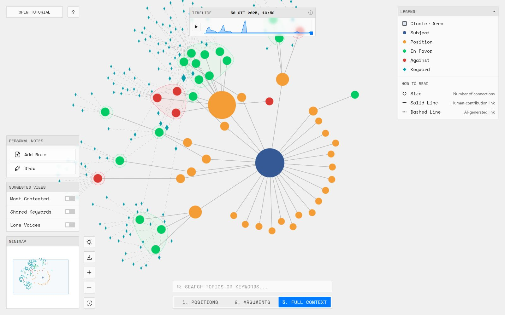
Explore the interactive prototype on desktop.
Il Corollario transforms AI-mediated public discussions into explorable maps, making their structure, transformations and sources open to interpretation.
Research frame
01 Context
When AI organises a public debate, it also shapes how that debate is understood.
Clustering, ranking and summarisation can make participation scalable, but their mediation often remains invisible. The project reframes explainability as a communication design problem.
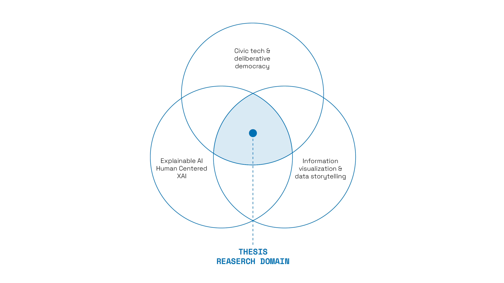
02 Research methodology
Research through design connected theory, requirements and a working platform.
The process moved from the ORBIS context and interdisciplinary research to design, prototyping and evaluation.
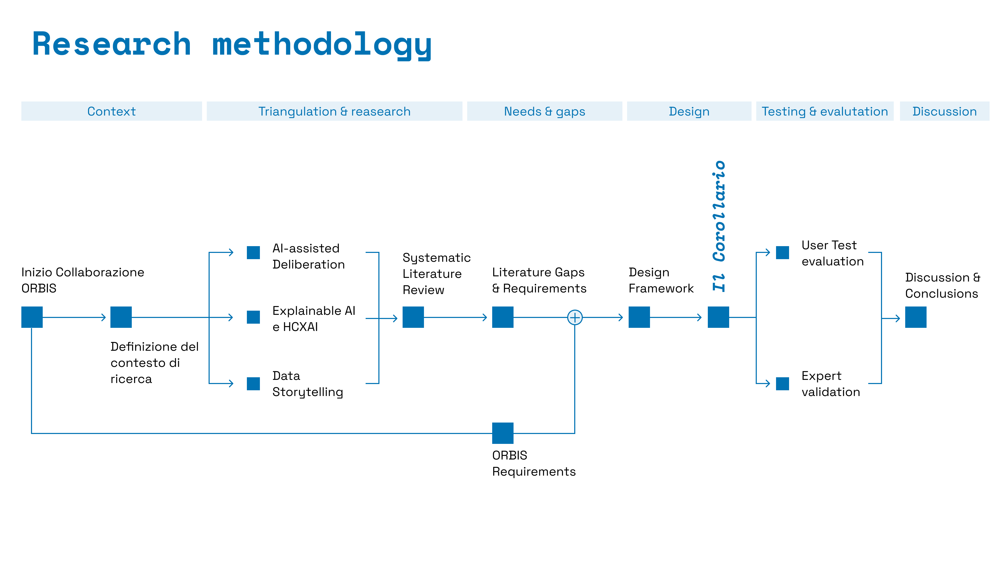
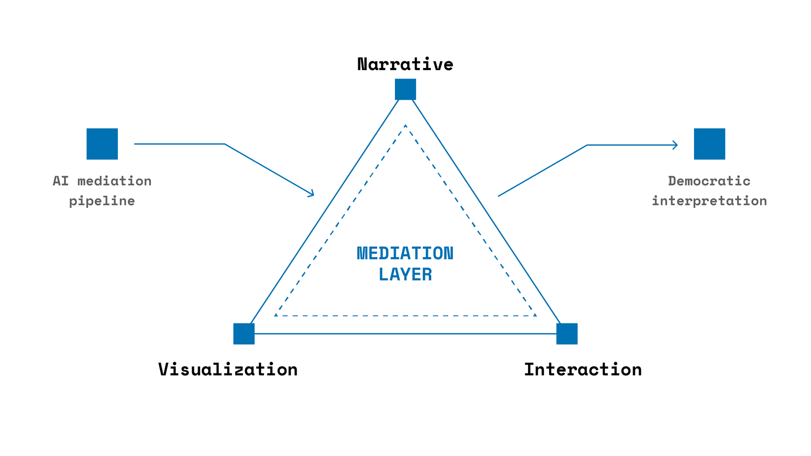
DESIGN POSITION
Communication design sits between AI mediation and democratic interpretation.
Narrative, visualisation and interaction become the layer through which automated transformations can be read and questioned.
03 Research questions
RQ 00
How can communication design operationalise Human-Centred Explainable AI for democratic deliberation?
How can visual and narrative scaffolding clarify complexity without closing down plurality?
How can explainability support comprehension, legitimacy and contestability?
FROM DATA STRUCTURE TO CIVIC INTERFACE
The graph became a space for reading.
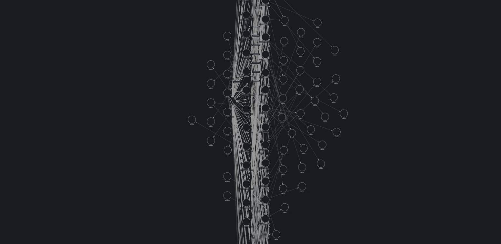
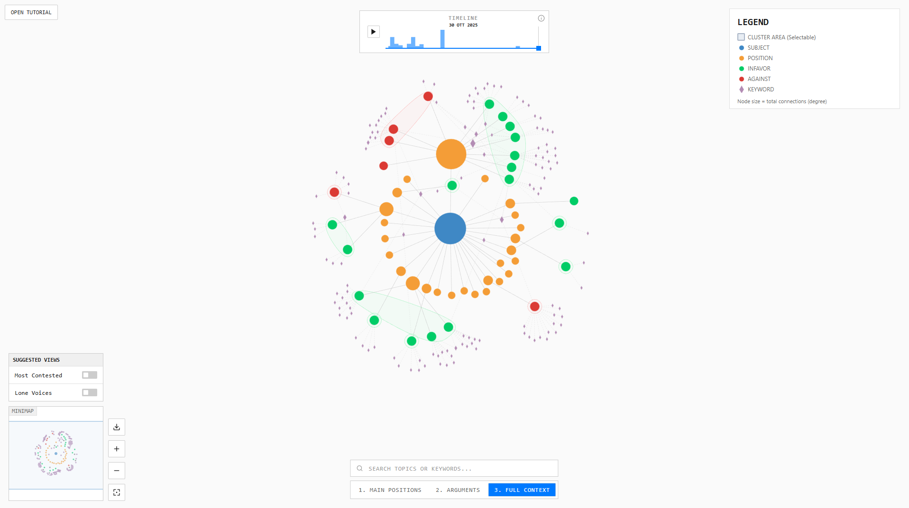
VISUAL GRAMMAR
Complexity is disclosed one layer at a time.
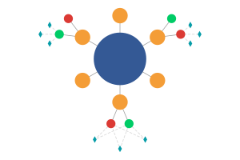
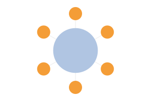
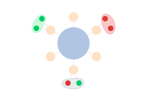
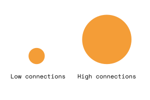
01 — ORIENT
Build a shared language before entering the graph.
02 — TIMELINE
Explore how the discussion evolves over time.
03 — EXPLORE
Move between overview, arguments and full context.
04 — VERIFY
Trace collective patterns back to individual contributions.
05 — QUESTION THE AI
Expose what happened between public input and visual output.
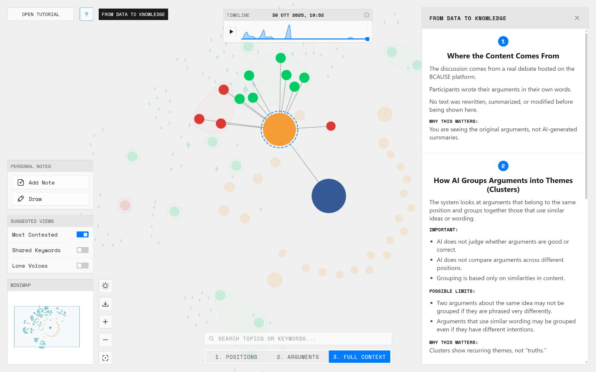